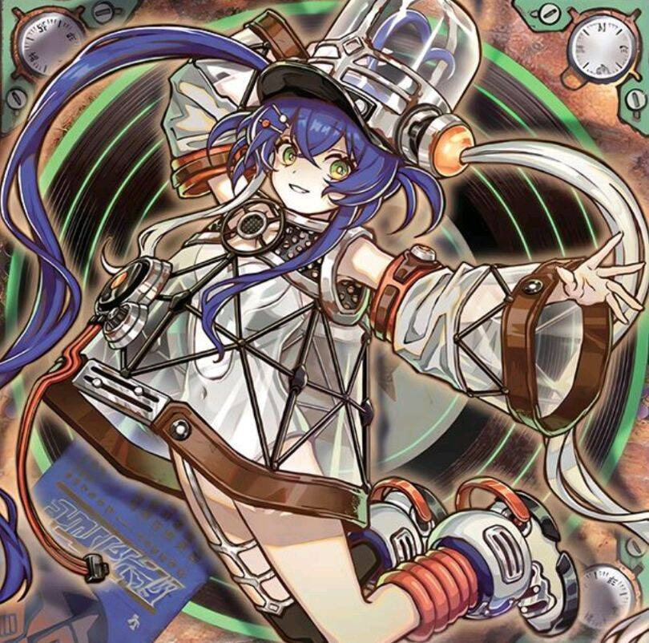

杀手级调整曲
裁定
多个可以把手卡的怪兽作为同调素材适用时, 最多能把那个适用数量的手卡的怪兽作为同调素材.
「杀手级调整曲」的「场上的这张卡为素材作同调召唤的场合，手卡1只调整也能作为同调素材。」在自身被无效的场合也能适用.
「杀手级调整曲」的自肃适用的回合, 也不能用「武力军奏」来同调同调调整以外的怪兽. 不能特召持有「这个效果特殊召唤的这张卡当作调整使用」效果的调整以外的怪兽. 也不能特殊召唤持有「这张卡当作调整使用特殊召唤」效果的非调整.
「杀手级调整曲·提示员」的②效果处理时, 不能除外的效果适用的场合, 这个效果完全不适用, 也不翻开卡.
「杀手级调整曲·削波手」的①效果处理时, 宣言同调的「次元障壁」适用的场合, 只进行这张卡的特殊召唤. 「杀手级调整曲同调」也一样. 「次元障壁」宣言同调适用的回合, 也能发动这两张卡的效果. 那个场合, 不能处理进行1只同调怪兽调整的同调召唤.
「杀手级调整曲·削波手」的②效果处理时, 不能除外的效果适用的场合, 那个效果完全不处理.
「点唱机酒吧“杀手级调整曲”」
●有多个追加通常召唤的效果适用中, 这个回合中也只能适用其中任意一个. 适用过一个的场合, 「点唱机酒吧“杀手级调整曲”」的①效果不能适用.
●不能适用「点唱机酒吧“杀手级调整曲”」的①效果进行怪兽的盖放. 可以上级召唤.
●那个③效果可以解放自己场上里侧守备表示的怪兽.
●那个②效果是在场上表侧表示持续适用的效果, 自己场上攻击力是0的「杀手级调整曲响度战争」被「禁忌的一滴」无效, 这个回合对方场上或墓地再有调整存在, 攻击力也维持在0. 下个回合, 对方场上或墓地存在调整的场合, 「杀手级调整曲响度战争」攻击力为3300. 或是, 这个回合发动第二张「点唱机酒吧“杀手级调整曲”」的场合, 「杀手级调整曲响度战争」攻击力为3300.
●被「禁忌的一滴」无效的「杀手级调整曲响度战争」的攻击力已经因为那个②效果适用, 攻击力是3300的场合, 那个攻击力变为1650. 下个回合, 对方场上或墓地存在调整的场合, 「杀手级调整曲响度战争」攻击力为3300. 或是, 这个回合发动第二张「点唱机酒吧“杀手级调整曲”」的场合, 「杀手级调整曲响度战争」攻击力为4950.
「红莲新星」与「可以作为调整使用」的调整以外作为同调素材或是与「可以作为非调整使用」的调整作为同调素材, 同调召唤素材不要求非调整的同调怪兽的场合. 必须宣言另一只怪兽是作为调整怪兽还是作为非调整怪兽使用进行的同调召唤. 只有宣言另一只是作为调整怪兽进行同调召唤的场合, 才能发动「红莲新星」的②效果.
「杀手级调整曲·旋钮手」在对方没有手牌的场合不能发动第二个●效果, 处理时没有手牌的场合完全不处理.
同调召唤的怪兽变为里侧表示, 又或是再变为表侧表示, 或是一时除外都算同调召唤的怪兽.
「杀手级调整曲 B2B」同一个连锁可以多次发动③效果.
注意
简单记忆: 风/绿毛炸怪, 暗削额外, 炎/黄毛炸魔陷, 光/蓝毛窥顶, 漏洞人弹手, 金克斯回收加速, 红的涨一星一擦, 音响Copy, 若叶睦看手, 背靠背涨两星回收加速, 还有一个不好描述的削额外.
「杀手级调整曲 B2B」
●用3只怪兽以上作为素材来同调召唤时, 那个素材只能有最多1只不是同调怪兽. 注意不能用1只同调怪兽+2只下级来同调召唤.
●③效果只能连锁对方的怪兽效果来发动, 不能连锁魔法/陷阱卡的效果的发动来发动.
禁止通常召唤「PSY骨架装备·γ」, 更禁止用其与手牌的「杀手级调整曲」怪兽同调.
自肃
系列自肃为: 不是调整不能特殊召唤.
「杀手级调整曲·提示员」(卡组拉人), 「杀手级调整曲同调」(速攻), 「点唱机酒吧“杀手级调整曲”」(卡组拉人), 「杀手级调整曲播放列表」(陷阱)有系列自肃.
「同调紧急」拉人后有两个回合的同调自肃.
卡组预览(主轴By 龙果)
盖放: 伍世坏净心; 杀手级调整曲同调; 无限泡影;
段数: NS, 同调超车, 杀手级调整曲·旋钮手, 点唱机酒吧“杀手级调整曲”